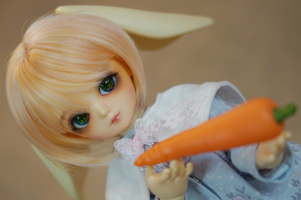

I found another copy of The Man in the High Castle at the thrift store that was closing in my hometown and, against my better judgement, bought it. My mom has seen the show so she started telling me about how confused she was about it. Now I got confused because I didn't rememember what she was talking about. I asked her to put on the show since she has access to my sister's Amazon account.
I first thought they were starting the series before the book, before Juliana and Frank were even married. This wasn't the case!
My biggest complaint is that they didn't want to make the characters pathetic. Frank is dating Juliana instead of being devoted to his ex-wife. Frank is no longer Jewish, but has a Jewish ancestor. Juliana is a devoted girlfriend of amazing artist Frank somehow. Joe is a good guy at heart! I guess Childan is still a loser and an asshole so they got that right.
The show spends a lot of time villifying Nazis and not a ton of time villifying the Japanese. I'm not even sure I saw any black people enslaved in Japanese America. The show has Hitler still in power while he's quite dead in the book. Was Baynes even Jewish in the show?? It feels very much like a product of late 2010s which is not a compliment.
The entire The Grasshopper Lies Heavy was different. The book version did not match actual history and was accessible, at least to the people outside of the German run areas. The film versions were highly illegal and collected by the man in the high castle as well as Hitler and showed historical footage plus Amazon Original footage. This allows for approximately 1000% more drama.
My mom asked me where the show and the book depart. The answer is before episode 1. Like, I don't even know where to start! They have some same character names and basic concepts and ideas. They wanted more drama bullsh*t and changed everything significantly to add it.
Anyway, despite my complaints, we watched the first season and a little more. It's not good. Don't watch it. She wouldn't even watch Lars and the Real Girl with me!
I had a lot of fun trying out the 75-200mm lens I bought! I was really confused how to get it to zoom at first, but the secret is that you have to unclick out of macro mode and then you can pull the focus ring out to zoom. Macro mode works exclusively at 75mm.


The background blur is incredible at a short distance to the subject! What trees??? What grass??
I was having trouble keeping the lens steady at 200mm even though I have some super awesome stabilization system Sony is proud of. I asked a buddy and he told me to adjust the lens length in the settings which I suppose I have had at 8mm the entire time I've been using this camera oops!!!
I also took him to the back yard to my grandma's swinging bench that is in disrepair. Please enjoy this too much eye contact that I am unsure I should share! It's very uncheby to spend this much time looking at you.
These backyard ones may have been with the 35-70. The problem with old lenses....


And some bonus photos from my "studio"!! All 200mm. I really like this wig on Liam.


Macro mode at 75mm
